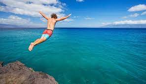

This is probably my favorite activity that I do throughout the year with Summer being the only time that this activity is actually possible. This is the time of the year that the water is deep enough and the weather is warm enough(for most, that is) to really be able to enjoy the plunge! It doesn't matter who you are, there is a cliff that you will easily be able to send it off of. There are no judgments for what you are able to do. Just think of all of the amazing locations that this activity is an option for, Hawaii, all across Europe, Asia, and even your back yard! This is an activity that can be dangerous so make sure that you depth check and never do anything that you aren't completely comfortable with. Happy diving!